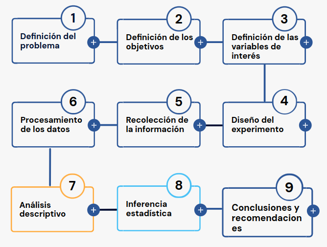

En esta unidad se presenta la Metodología Estadística como estrategia que permite visualizar las diferentes etapas presentes en una investigación o análisis de datos :

Tambien se hará especial referencia a la construcción, depuración y documentación de las bases de datos, acciones necesarias para un buen análisis de datos.
Con este propósito se hará uso del portal Bases de Datos Abiertos, del lenguaje R y su IDE RStudio.
Al finalizar la unidad los estudiantes estarán en capacidad de RECONOCER los pasos de la Metodología Estadística y podrán ESTRUCTURAR, LIMPIAR y DOCUMENTAR una base de datos con el fin de garantizar los elementos necesarios para realizar un procesamiento de datos. Para ello seleccionaran una base de datos. Adicionalmente propondrán un problema que les permita el desarrollo de la metodológica estadística.
La presente unidad será desarrollada durante la primera semana del semestre . Ademas del material suministrado se podrá contar con el acompañamiento del profesor en dos sesiones (Miércoles y Jueves) y una tercera con un monitor. Los documentos requeridos para esta unidad deberán ser entregados a través de la plataforma Brightspace hasta el 31 de julio.
Para alcanzar los objetivos planteados se propone realizar las siguientes actividades:
| Actividad111 | Descripción |
|---|---|
| Individual | Metodología estadística: : Formular un problema que le permita desarrollar un ejercicio académico durante el semestre a través de la recolección de información (primaria o secundaria), Ademas de establecer los objetivos y las variables de interés asociadas en dicho problema e identificar el tipo de variable y su escala de medición. El resultado de esta actividad deberá se entregado en archivo en formato pdf con nombre: actividad111.pdf en enlace ubicado en la plataforma Bs |
| Fecha | 31 de julio de 2024 |
| Hora | 23:59 hora local |
| Actividad112 | Descripción |
|---|---|
| Individual | Base de datos : Cada estudiante deberá buscar una base de datos de su interés, depuarla y documentarla si es necesario. A partir de la información recolectada deberá construir la ficha técnica de la base. El resultado de esta actividad deberá se entregado en archivo en formato pdf con nombre: actividad112.pdf |
| Recurso | Video: Como descargar datos abiertos |
| Formato ficha : Ficha técnica | |
| Excel | |
| RStudio | |
| Fecha | 31 de julio 2024 |
| Hora | 23:59 hora local |
| Actividad113 | Descripción |
|---|---|
| Individual | Instalación de R y RStudio : Para el desarrollo de las actividades del curso deberán instalar R CRAN y RStudio. Para su correcta instalación existen varios videos en YouTube que le permitirán realizarlo de una manera correcta |
| Recursos | Descargar e instalar R y RStudio 2021 -Video Rafa Gonzalez Gouveia |
| R download | |
| RStudio download | |
| Fecha | 31 de julio 2024 |
| Hora | 23:59 hora local |
Reconocer la relación existente ente la definición del problema, el planteamiento de los objetivos y la definición de las variables de interés dentro de la Metodología Estadística.
Reconocer e identificar los diferentes tipos de variables y sus respectivas escalas de medición.
Identificar la estructura de una base de datos
| Entregable | Descripción |
|---|---|
| actividad111.pdf | Documento que contenga: Formulación de problema propuesto, definición de los objetivos y definición de variables de interés. En este último caso detallar para cada variable su tipo ( cualitativa o cuantitativa ) y su escala de medición ( nominal, ordinal, de intervalo o de razón). |
| actividad112.pdf | Ficha técnica de la base seleccionada |
| Fecha | 31 de julio 2024 |
| Hora límite | 23:59 hora local |
Nombre del estudiante:
| Variable | Tipo de variable | Tipo de escala |
|---|---|---|
| (nombre de la variable) | (cualitativa | (nominal/ordinal |
| cuantitativa) | de intervalo/de razón) | |